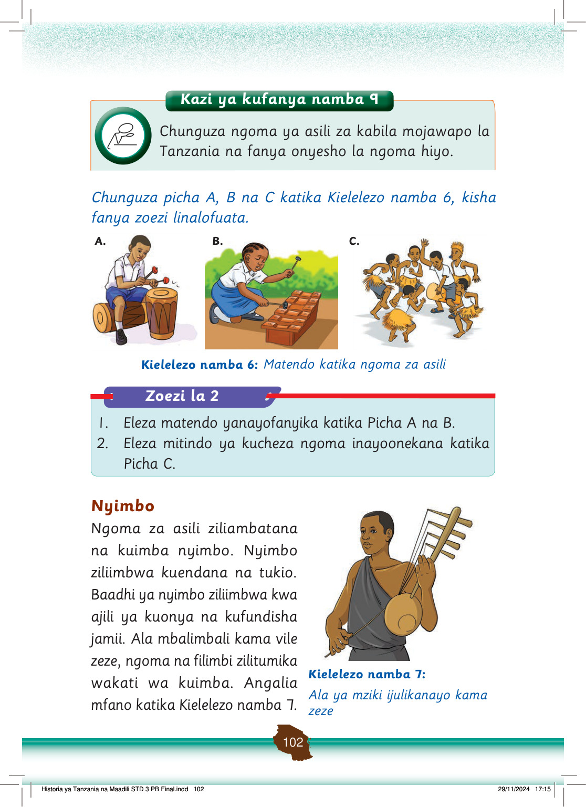

Nyimbo zilitumika kama sehemu ya burudani katika jamii.
Kulikuwa na nyimbo zilizoimbwa kwa matukio mbalimbali, mfano wakati wa mavuno, sherehe za jando na unyago, harusi na misiba.
Nyimbo hizi ziliimbwa kwa ajili ya kufundishia, kuonya na kuburudisha jamii.
Kazi ya kufanya namba 10
Kazi ya kufanya namba 10: Jadili tofauti kati ya nyimbo za kizazi kipya na nyimbo za asili katika kujenga maadili ya jamii kwa sasa.
Jadili tofauti zilizopo kati ya nyimbo za kizazi kipya na nyimbo za asili katika kujenga maadili ya jamii kwa sasa.
Jamii ya sasa ina baadhi ya nyimbo zenye maudhui yanayoharibu maadili ya jamii.
Ni wajibu kwa watoto kuepuka kuimba na kuiga matendo yasiyofaa yanayoambatana na baadhi ya nyimbo za muziki wa kizazi kipya.
Hii itasaidia kujenga maadili yanayofaa katika jamii zetu kwa sasa.
Vyakula
Jamii za Kitanzania zilikuwa na vyakula mbalimbali vya asili.
Kazi ya kufanya namba 11
Kazi ya kufanya namba 11: Waulize wazazi au walezi na andika kuhusu vyakula vya asili vya kabila lako.
Waulize wazazi au walezi na andika kuhusu vyakula vya asili vya kabila lako.
Jamii zina asili ya vyakula vinavyofanana, ingawa kuna tofauti ya mapishi.
Kwa mfano, jamii nyingi zilikuwa na chakula cha ndizi, ingawa mapishi ya ndizi yalitofautiana kati ya jamii na jamii.
Mapishi ya ndizi ya asili hufanyika ama kwa kuchanganywa na nyama, maharagwe, samaki, njugu mawe, choroko au mbogamboga.
Pia, ndizi huchomwa au huchanganywa na maharagwe, supu au maziwa na kukorogwa